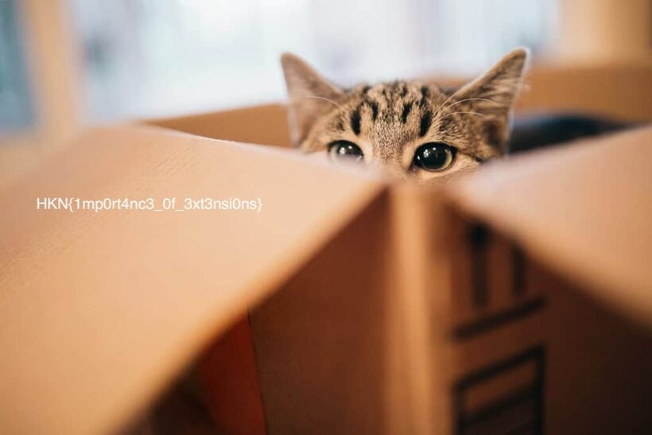

Filen er ikke i stykker — filnavnet lyver bare.
Fil: evidence/corrupted/01-3xt — del af forensics_dcis-osint.zip fra Introduction-opgaven.
En "ødelagt" fil 01-3xt. Men file læser de faktiske magic bytes:
file 01-3xt # -> JPEG image data (navnet løj!)
cp 01-3xt 01.jpg # åbn -> flaget står skrevet i billedetFlag: HKN{1mp0rt4nc3_0f_3xt3nsi0ns}

.jpg: flaget står skrevet direkte i billedet (per-instans-opgaver kan vise et andet flag — her er pointen hvor det står).file læser magic bytes og afslører det faktiske format uanset endelse.En filendelse er bare en del af navnet, den fortæller intet sikkert om indholdet. Derfor er
file (som læser de faktiske magic bytes) et af de allerførste værktøjer at nå efter,
når du får en ukendt eller "ødelagt" fil. Samme pointe går igen i dotsuffix
(en ZIP forklædt som JPEG). Gør det til en refleks: kør file før du tror på navnet.